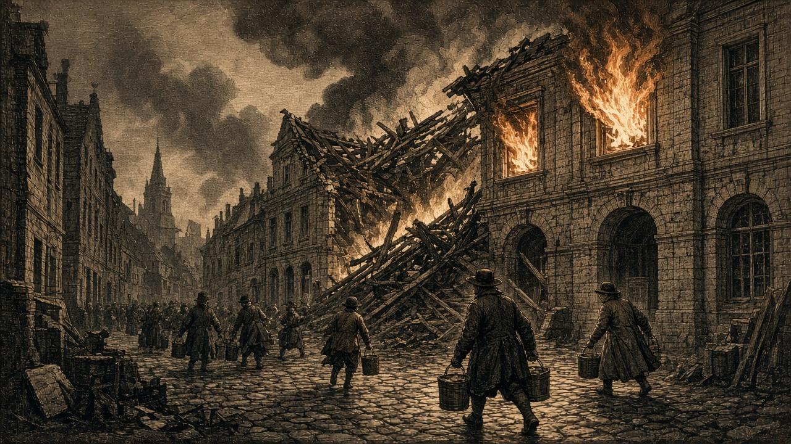

各地で大火、26,700人死亡
青海、なのです、あろあろで惨事 都市防災の立ち遅れ浮き彫り

炎の上がる石の街。
青海共和国、なのです主義人民共和国、あろあろ国で火災が相次ぎ、五つの都市・町で計26,700人が死亡した。
青海共和国では二つの都市でそれぞれ9,900人、5,000人が死亡した。なのです主義人民共和国の二つの町では各2,900人、あろあろ国の都市でも6,000人が犠牲となった。
テキスタン共和国では工場が火災に見舞われ、建物が壊滅した。
戦禍による死者が相次ぐ世界で、都市火災によっても一週間に数万人もの命が失われた事実は重い。戦争への備えに比べ、都市に暮らす住民を火災から守る取り組みは十分なのか。
大都市への人口集中が進めば、一度の火災がもたらす人的被害も拡大しかねない。焼失した工場の再建とともに、住民の生命を守る防災体制の強化は、各国に共通する急務である。
復興の成否は建物の数だけでは測れない。犠牲者を出した街で、残された人々が再び安心して暮らせるかどうかが問われている。
金野・蒼森に移民31,900人
働き口求め国境越える 人口増加が受け入れ地に変化
荷を背負い、町の門へ向かう人々。
なのです主義人民共和国から金野伯爵領へ、仕事を求める18,600人が移住した。金野はこれを受け入れ、人口は77,600人となった。
灰岩王国から蒼森辺境伯領へも13,300人が移住し、蒼森の人口は66,300人となっている。
二つの地域が受け入れた移民は合わせて31,900人に上る。人口の移動は、送り出す国と受け入れる国の双方の経済に影響を及ぼす。受け入れ先では働き手の増加が生産活動を支える一方、住居や生活物資に対する需要も増すことになる。
人口が増えれば国が豊かになるとは限らない。新たに迎えた人々に十分な職と生活の基盤を用意できるかどうかが重要だ。
一方、住民が流出する国にとっては、貴重な働き手を失うことにもつながる。人口を引き留めるには、移住を制限するよりも、人々が自国にとどまりたいと考えるだけの仕事と生活環境を整えることが肝要であろう。
各地で続く人口移動は、国の豊かさが単なる領土の広さや軍勢の数だけでは決まらないことを物語っている。
狐っ娘の尻尾教団、軍拡なお止まらず
人口95,300人に兵力176,500人 働き手不足77,700人でも徴兵続行
狐っ娘の尻尾教団は、複数の町で新たな徴兵を実施した。教団の人口は95,300人に対し、兵力は176,500人。住民人口を大幅に上回る軍勢を擁しながら、なお兵の増強を続けている。
教団は現在、他国と戦争をしていない。平時から十分な軍事力を確保することには、他国の攻撃を思いとどまらせる抑止効果も期待できよう。しかし、その軍勢があまりに巨大になれば、周辺諸国の警戒を招き、かえって緊張を高めるおそれがある。
さらに懸念されるのが、教団国内の深刻な人手不足だ。働き手の不足は77,700人に達している。産業を支える人員が足りない状況で、軍事力の拡大ばかりを優先する政策は、国民生活との均衡を欠いてはいないか。
軍を維持するには、食料、資金、物資、補給施設が欠かせない。兵力が増えれば、それを支える経済基盤も強化しなければならない。徴兵が直ちに労働力不足を拡大させるとは限らないとしても、巨大な軍事力を維持する国家が民生の立て直しを後回しにすることはできまい。
そもそも軍隊は国を守るために存在する。守るべき住民の暮らしが立ち行かなくなれば、いかに兵力を増やしても国力の充実とは言えない。
戦争をしていない教団が、人口を大きく上回る軍勢をなお増強する理由は何なのか。そして、その軍勢を養いながら国内の働き手不足をどう解消していくのか。
大軍を持つことと、強い国家を築くことは同義ではない。軍備の増強が国家の繁栄に結びつくか、それとも民生を圧迫する重荷となるか。教団の進む道は、今後の政策にかかっている。